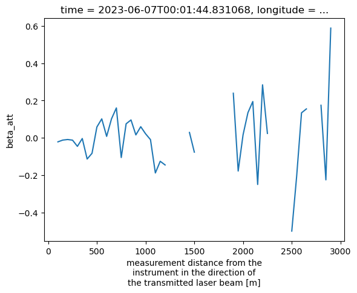
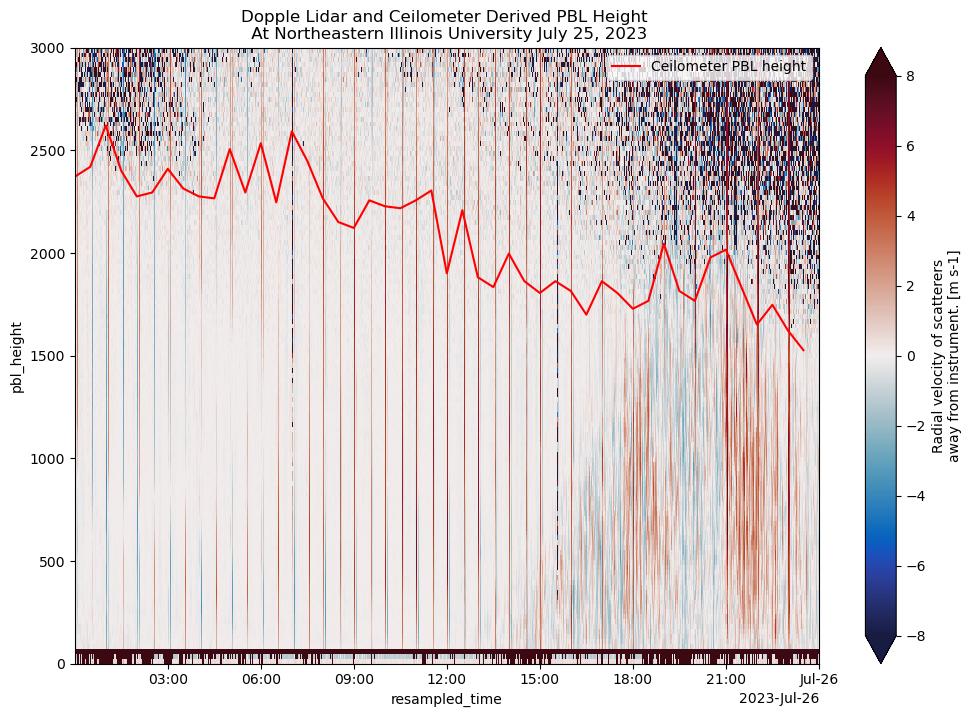

Planetary Boundary Layer (PBL) Height Retrievals from Ceilometer Data#
Imports#
import pywt
import numpy as np
import cmweather
import xarray as xr
import scipy
import act
import pywt
import glob
import matplotlib.pyplot as plt
Data Access#
Data has been pre-staged to the local directory, it can be found on ESS-Dive
base_dir = "/Users/mgrover/crocus-data/daily-cl61/"
files = sorted(glob.glob(f"{base_dir}crocus-neiu-ceil-a1-20230607*.nc"))
ds = xr.open_dataset(files[-1])
---------------------------------------------------------------------------
IndexError Traceback (most recent call last)
Cell In[4], line 1
----> 1 ds = xr.open_dataset(files[-1])
IndexError: list index out of range
import act
ds = ds.sel(range=slice(0, 3000))
ds = ds.interp(range=np.arange(50, 3000, 50), method='nearest')
ds
<xarray.Dataset> Size: 1MB
Dimensions: (time: 799, layer: 5, range: 59)
Coordinates:
* time (time) datetime64[ns] 6kB 2023-06-07T0...
* layer (layer) float64 40B 1.0 2.0 3.0 4.0 5.0
longitude float64 8B -87.72
latitude float64 8B 41.98
* range (range) int64 472B 50 100 ... 2900 2950
Data variables: (12/26)
cloud_base_heights (time, layer) float64 32kB 4.032e+03 ....
vertical_visibility (time) float64 6kB nan nan ... nan nan
p_pol (time, range) float32 189kB 9.67e-07 ....
x_pol (time, range) float32 189kB 3.927e-08 ...
beta_att (time, range) float32 189kB 1.006e-06 ...
linear_depol_ratio (time, range) float32 189kB 0.03625 .....
... ...
fog_detection (time) float32 3kB 0.0 0.0 ... 0.0 0.0
receiver_gain (time) float32 3kB 1.0 1.0 ... 1.0 1.0
range_resolution (time) float32 3kB 4.8 4.8 ... 4.8 4.8
cloud_calibration_factor (time) float64 6kB 0.4334 ... 0.4334
cloud_calibration_factor_user (time) float64 6kB 0.4334 ... 0.4334
overlap_function (time, range) float32 189kB 0.07701 .....
Attributes: (12/14)
title: CL61D CL61 with Depolarization
institution: NEIU
source:
conventions: CF-1.8
schema_version: 1.3
sw_version: 1.2.7
... ...
unit: m
instrument_serial_number: U3810828
overlap_function_provided: 1
overlap_is_corrected: 1
file_temporal_span_in_minutes: 5.0
profile_interval_in_seconds: 60ds = act.corrections.correct_ceil(ds, var_name="beta_att")
ds = act.corrections.correct_ceil(ds, var_name="x_pol")
ds = act.corrections.correct_ceil(ds, var_name="p_pol")
ds["beta_att"] = ds.beta_att.where(ds.beta_att >= -6.5)
ds.beta_att.plot(x='time', vmin=-7, vmax=-3, cmap='ChaseSpectral')
<matplotlib.collections.QuadMesh at 0x31fb6ead0>
coeffs = pywt.dwt2(ds.beta_att.values, 'haar')
cA, (cH, cV, cD) = coeffs
resampled_range = ds.range.values[::2]
resampled_time = ds.time.values[::2]
ds["resampled_range"] = resampled_range
ds["resampled_time"] = resampled_time
ds = ds.set_coords(["resampled_range", "resampled_time"])
ds["wavelet_backscatter"] = (("resampled_time", "resampled_range"), cA)
min_range = ds.wavelet_backscatter.min("resampled_range")
pbl_heights = []
for time in range(len(ds.resampled_time)):
ds_single_time = ds.isel(resampled_time=time).wavelet_backscatter
pbl_heights.append(ds_single_time.where(ds_single_time == min_range.isel(resampled_time=time), drop=True).resampled_range.values[0])
ds["pbl_height"] = (("resampled_time"), pbl_heights)
ds["pbl_height"] = ds.pbl_height.where(ds.pbl_height < 3000)
mask = (ds.linear_depol_ratio > 0) & (ds.linear_depol_ratio <=0.7)
ldr = ds.linear_depol_ratio.where(mask)
back = ds.beta_att.where(mask)
ldr.plot(x='time', vmin=0, vmax=.7, cmap='ChaseSpectral')
ds.pbl_height.resample(resampled_time='30min').min().plot(color='r', label='Planetary Boundary Layer Height')
plt.ylim(0, 2_500)
plt.legend(loc='upper right')
plt.ylabel("Height Above Ground (m)")
plt.xlabel("Time (UTC)")
plt.title("Linear Depolarization Ratio and PBL Height \n June 7 2023")
plt.savefig("ldr_pbl_june_7_2023.png", dpi=300)
ds["pbl_height"] = ds.pbl_height.interp(resampled_time=ds.time)
for i in range(0, 600, 100):
#ds.beta_att.isel(time=i).plot(label=f'time step {i}')
ds.beta_att.isel(time=i).diff("range").plot(label=f'time step {i}')
plt.show()
plt.close()

back.plot(x='time', vmin=-6.5, vmax=-4, cmap='ChaseSpectral')
ds.pbl_height.resample(time='60min').min().plot(color='r', label='Planetary Boundary Layer Height')
plt.ylim(0, 2_500)
plt.legend(loc='upper right')
plt.ylabel("Height Above Ground (m)")
plt.xlabel("Time (UTC)")
plt.title("Backscatter Coefficient and PBL Height \n June 7 2023")
plt.savefig("backscatter_pbl_june_7_2023.png", dpi=300)
ds = xr.open_dataset(f"{base_dir}crocus-neiu-ceil-a1-20230725-000000.nc")
ds = ds.sel(range=slice(0, 4_500))
ds = act.corrections.correct_ceil(ds, var_name="beta_att")
ds["beta_att"] = ds.beta_att.where(ds.beta_att >= -6.5)
coeffs = pywt.dwt2(ds.beta_att.values, 'haar')
cA, (cH, cV, cD) = coeffs
resampled_range = ds.range.values[::2]
resampled_time = ds.time.values[::2]
ds["resampled_range"] = resampled_range
ds["resampled_time"] = resampled_time
ds = ds.set_coords(["resampled_range", "resampled_time"])
ds["wavelet_backscatter"] = (("resampled_time", "resampled_range"), cA)
min_range = ds.wavelet_backscatter.diff("resampled_range").max("resampled_range")
pbl_heights = []
for time in range(len(ds.resampled_time)):
ds_single_time = ds.isel(resampled_time=time).wavelet_backscatter
pbl_heights.append(ds_single_time.where(ds_single_time.diff("resampled_range") == min_range.isel(resampled_time=time), drop=True).resampled_range.values[0])
ds["pbl_height"] = (("resampled_time"), pbl_heights)
ds["pbl_height"] = ds.pbl_height.where(ds.pbl_height < 3000)
mask = (ds.linear_depol_ratio > 0) #& (ds.linear_depol_ratio <=0.7)
ldr = ds.linear_depol_ratio#.where(mask)
back = ds.beta_att#.where(mask)
ds.isel(resampled_time=0).wavelet_backscatter.plot()
[<matplotlib.lines.Line2D at 0x31934d510>]
ds.receiver_gain
<xarray.DataArray 'receiver_gain' (time: 815)> Size: 3kB
[815 values with dtype=float32]
Coordinates:
* time (time) datetime64[ns] 7kB 2023-07-25T00:00:39.740011999 ... 20...
longitude float64 8B ...
latitude float64 8B ...
Attributes:
long_name: receiver gain status
comment: high-gain/low-gain (1/0)ds.p_pol.plot(x='time', vmin=-6.5, vmax=-5, cmap='ChaseSpectral')
ds.pbl_height.resample(resampled_time='30min').min().plot(color='r', label='Planetary Boundary Layer Height')
ds.cloud_base_heights.isel(layer=0).plot(color='r')
plt.ylim(90, 4000)
plt.legend(loc='upper right')
plt.ylabel("Height Above Ground (m)")
plt.xlabel("Time (UTC)")
plt.title("Linear Depolarization Ratio and PBL Height \n June 24 2023")
plt.savefig("co_pol_pbl_july_25_2023.png", dpi=300)
ds.x_pol.plot(x='time', vmin=-8, vmax=-5, cmap='ChaseSpectral')
ds.pbl_height.resample(resampled_time='30min').min().plot(color='r', label='Planetary Boundary Layer Height')
ds.cloud_base_heights.isel(layer=0).plot(color='r')
plt.ylim(90, 4000)
plt.legend(loc='upper right')
plt.ylabel("Height Above Ground (m)")
plt.xlabel("Time (UTC)")
plt.title("Linear Depolarization Ratio and PBL Height \n June 24 2023")
plt.savefig("cross_pol_pbl_july_25_2023.png", dpi=300)
back.plot(x='time', vmin=-6.5, vmax=-5, cmap='ChaseSpectral')
ds.pbl_height.resample(resampled_time='30min').min().plot(color='r', label='Planetary Boundary Layer Height')
plt.ylim(0, 4_500)
plt.legend(loc='upper right')
plt.ylabel("Height Above Ground (m)")
plt.xlabel("Time (UTC)")
plt.title("Backscatter Coefficient and PBL Height \n June 24 2023")
plt.savefig("backscatter_pbl_july_25_2023.png", dpi=300)
files = sorted(glob.glob("../../crocus/mrr-quicklooks/20230725/*"))
mrr_ds = xr.open_mfdataset(files,
concat_dim='time',
combine="nested")
mrr_ds = mrr_ds.sortby("time")
fig = plt.figure(figsize=(12,8))
mrr_ds.sel(range=slice(0, 3_000)).radial_velocity.plot(x='time',
vmin=-8,
cmap='balance',
vmax=8)
ds.pbl_height.resample(resampled_time='30min').min().plot(color='r', label='Ceilometer PBL height')
plt.legend(loc="upper right")
plt.title("Dopple Lidar and Ceilometer Derived PBL Height \n At Northeastern Illinois University July 25, 2023")
plt.savefig("doppler_velocity_july_25_2023.png", dpi=300)

MRR Section#
import pyart
## You are using the Python ARM Radar Toolkit (Py-ART), an open source
## library for working with weather radar data. Py-ART is partly
## supported by the U.S. Department of Energy as part of the Atmospheric
## Radiation Measurement (ARM) Climate Research Facility, an Office of
## Science user facility.
##
## If you use this software to prepare a publication, please cite:
##
## JJ Helmus and SM Collis, JORS 2016, doi: 10.5334/jors.119
import glob
files = sorted(glob.glob("../../crocus/mrr-quicklooks/20230624/*"))
mrr_ds = xr.open_mfdataset(files,
concat_dim='time',
combine="nested")
mrr_ds = mrr_ds.sortby("time")
fig = plt.figure(figsize=(12,8))
mrr_ds.sel(range=slice(0, 2_500)).radial_velocity.plot(x='time',
vmin=-8,
cmap='balance',
vmax=8)
ds.pbl_height.resample(resampled_time='30min').min().plot(color='r', label='Ceilometer PBL height')
[<matplotlib.lines.Line2D at 0x34e3f1e50>]